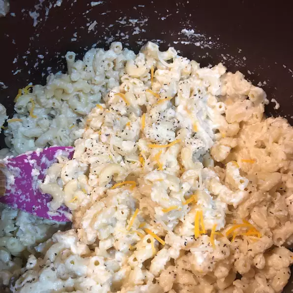

Cauliflower Mac-N-Cheese

A Nutrious and Simple Mac-N-Cheese Recipe!
Who doesn't love mac-n-cheese!Using this simple and easy to do recipe, you too can have a family classic for everyone to enjoy.
I picked a recipe that includes cauliflower because it pairs extremely well with the traditional mac, as well as being a healthy food to eat.
This recipe is also super simple to follow and can be scaled to make more or less depending on your needs.
- 1 1/2 cups elbow macaroni
- 1/2 cup caulifolower florets
- cooking spray
- 1 tablesppon olive oil
- 1 tablespoon all-purpose flour
- 1/2 cup milk
- 1 1/2 cups shredded Cheddar cheese
- 1/2 (8 ounce) package cream cheese
- 1/2 teaspoon salt
- 1/8 teaspoon ground black pepper
- Step 1
Bring a large pot of lightly salted water to a boil. Cook elbow macaroni in the boiling water, stirring occasionally until tender yet firm to the bite, 8 minutes. Drain.
- Step 2
Place a steamer insert into a saucepan and fill with water to just below the bottom of the steamer. Bring water to a boil. Add cauliflower, cover, and steam until tender, 5 to 6 minutes. Place cauliflower in a blender or food processor; blend until smooth.
- Step 3
Coat a large saucepan with non-stick cooking spray; place over medium heat. Add oil and flour; cook, stirring constantly, until a thick paste forms, 1 to 2 minutes. Add milk; cook and stir until mixture thickens, 3 to 4 minutes.
- Step 4
Mix cauliflower, Cheddar cheese, cream cheese, salt, and pepper into milk mixture; stir until sauce is smooth. Fold macaroni into sauce.